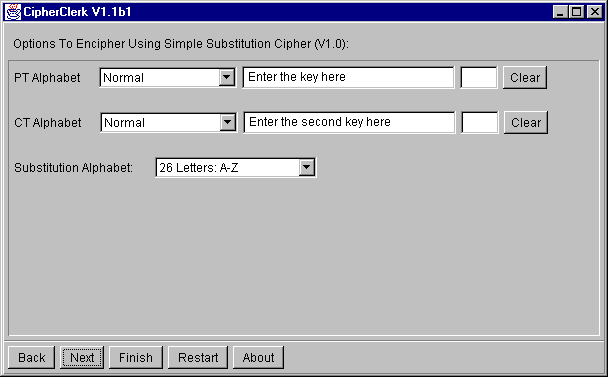

Simple Substitution Cipher
Description
This cipher replaces any plain text letter always by the same cipher text
letter. It' just like having a bad keyboard driver: Whenever you hit the
key labeled 'E', you obtain, say, 'K'. CipherClerk's Applet derives the substitution
from the two key words: one for the plain text alphabet, one for the ciphertext
alphabet. The Alphabet choices lets you select a scheme how this
substitution is generated. For both alphabets
you may specify an indicator. The alphabets are shifted so that the two
indicators match. Default indicators are placed at the first letters of
the mixed alphabets. Using the mixed alphabets
F I R S T K E Y A B C D G H J L M N O P Q U V W X Z
S E C O N D K Y A B F G H I J L M P Q R T U V W X Z
having indicators at x and y will be converted into:
X Z F I R S T K E Y A B C D G H J L M N O P Q U V W
Y A B F G H I J L M P Q R T U V W X Z S E C O N D K

To proceed, you may